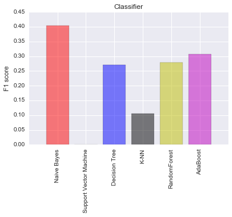

Enron Fraud Indentification
The main purpose of this project is using machine learning algorithm to detect fraudsters. Those persons are main criminals in Enron scandal. We would like to make a learning model to predict those people by using multiple variables which are reported in financial sheets and emailling list. Because we have already know person of interests (POI), we could use supervised machine learning to do this task.
#!/usr/bin/python
import sys
import pickle
sys.path.append("../tools/")
import tester
import tester
from feature_format import featureFormat, targetFeatureSplit
from tester import dump_classifier_and_data
from sklearn.pipeline import Pipeline
from sklearn.decomposition import PCA
import matplotlib.pyplot as plt
from time import time
from sklearn.cross_validation import train_test_split
from sklearn import linear_model
import pandas as pd
import numpy as np
from sklearn.metrics import classification_report
from tabulate import tabulate
import seaborn as sns
from sklearn.preprocessing import MinMaxScaler
from sklearn.preprocessing import StandardScaler
from sklearn.feature_selection import SelectKBest
from sklearn.feature_selection import chi2
from sklearn.grid_search import GridSearchCV
from sklearn.cross_validation import StratifiedShuffleSplit
from sklearn.naive_bayes import GaussianNB
from sklearn.svm import SVC
from sklearn.tree import DecisionTreeClassifier
from sklearn.neighbors import KNeighborsClassifier
from sklearn.ensemble import RandomForestClassifier
from sklearn.ensemble import AdaBoostClassifier
from sklearn.ensemble import GradientBoostingClassifier #GBM algorithm
from sklearn.linear_model import LogisticRegression
from xgboost.sklearn import XGBClassifier
import xgboost as xgb
%matplotlib inline
1. Dataset Exploration
### Load the dictionary containing the dataset
with open("final_project_dataset.pkl", "r") as data_file:
data_dict = pickle.load(data_file)
### features_list is a list of strings, each of which is a feature name.
### The first feature must be "poi".
target_list = ['poi']
report_list = ['salary','deferral_payments', 'total_payments',
'loan_advances', 'bonus', 'restricted_stock_deferred',
'deferred_income', 'total_stock_value', 'expenses',
'exercised_stock_options', 'other', 'long_term_incentive',
'restricted_stock', 'director_fees','to_messages',
'from_poi_to_this_person', 'from_messages', 'from_this_person_to_poi',
'shared_receipt_with_poi']
features_list = target_list + report_list
### Store to my_dataset for easy export below.
my_dataset = data_dict
counter = 0
for entry in my_dataset:
if my_dataset[entry]['poi']:
counter += 1
print 'Number of data points in this dataset: %f' %len(my_dataset)
print 'Number of POI in this dataset: %f' %counter
print 'Number of feature in this dataset: %f' %len(features_list)
Number of data points in this dataset: 146.000000
Number of POI in this dataset: 18.000000
Number of feature in this dataset: 20.000000
There are total 18 POIs in total 146 data points. Next step will be the data auditing to determine missing values or outliers.
Data audit
### Determine missing values in Enron report
value_report_list = [0,0,0,0,0,0,0,0,0,0,0,0,0,0,0,0,0,0,0]
dict_report_list = dict(zip(report_list,value_report_list))
for entry in my_dataset:
for name in report_list:
val = my_dataset[entry][name]
if val == 'NaN':
dict_report_list[name] += 1
NaN_table = pd.DataFrame(dict_report_list.items(), columns=['Feature', 'No of Missing Values'])
print NaN_table.sort(columns = 'No of Missing Values',ascending=False)
Feature No of Missing Values
11 loan_advances 142
6 director_fees 129
7 restricted_stock_deferred 128
2 deferral_payments 107
15 deferred_income 97
18 long_term_incentive 80
5 bonus 64
16 shared_receipt_with_poi 60
14 from_this_person_to_poi 60
1 to_messages 60
10 from_poi_to_this_person 60
12 from_messages 60
13 other 53
0 salary 51
9 expenses 51
4 exercised_stock_options 44
17 restricted_stock 36
3 total_payments 21
8 total_stock_value 20
C:\Anaconda2\lib\site-packages\ipykernel\__main__.py:10: FutureWarning: sort(columns=....) is deprecated, use sort_values(by=.....)
Through above table, every features except 'poi' has missing values at least 20 times. Top 3 features that have highest missing values are 'loan_advance', 'director_fees' and 'restricted_stock_deferred'.
According to Enron printed sheet, I found two outlier that is "TOTAL" and "THE TRAVEL AGENCY IN THE PARK".
- "TOTAL" is the summary of every column in Enron sheet and it is a spreadsheet quirk.
- "THE TRAVEL AGENCY IN THE PARK" is the account of business-related travel to The Travel Agency in the Park. It is not a person of interest.
Another possibility is the observation with no information (all "NaN" value) which will determined by the script beblow.
outlier_list = []
#### Next script is used to remove observation which have all value 'NaN' in Enron report.
for entry in my_dataset:
for name in report_list:
val = my_dataset[entry][name]
if val == 'NaN':
if entry not in outlier_list:
outlier_list.append(entry)
elif val != 'NaN':
try:
outlier_list.remove(entry)
break
except ValueError:
break
outlier_list.append('TOTAL') #insert 'TOTAL' observation
outlier_list.append('THE TRAVEL AGENCY IN THE PARK')
print 'The outlier list is: '
print outlier_list
The outlier list is:
['LOCKHART EUGENE E', 'TOTAL', 'THE TRAVEL AGENCY IN THE PARK']
Remove outlier
#### Remove outlier
for name in outlier_list:
my_dataset.pop(name,0)
print 'Number of data points after outlier removing in this dataset: %f' %len(my_dataset)
Number of data points after outlier removing in this dataset: 143.000000
2. Feature Selection
Create new feature
Through the Enron report, we have the email list of Enron POI and non-POI. It will be smart to create a new feature based on the ratio between to/from POI and to/from a person. There is a chance that they can be used in POI prediction later.
#### Making new feature based on other features.
def computeFraction( poi_messages, all_messages ):
""" given a number messages to/from POI (numerator)
and number of all messages to/from a person (denominator),
return the fraction of messages to/from that person
that are from/to a POI
"""
### you fill in this code, so that it returns either
### the fraction of all messages to this person that come from POIs
### or
### the fraction of all messages from this person that are sent to POIs
### the same code can be used to compute either quantity
### beware of "NaN" when there is no known email address (and so
### no filled email features), and integer division!
### in case of poi_messages or all_messages having "NaN" value, return 0.
if poi_messages == "NaN":
fraction = 0.
elif all_messages == "NaN":
fraction = 0.
else:
fraction = poi_messages*1.0/all_messages
return fraction
for name in my_dataset:
data_point = my_dataset[name]
from_poi_to_this_person = data_point["from_poi_to_this_person"]
to_messages = data_point["to_messages"]
fraction_from_poi = computeFraction( from_poi_to_this_person, to_messages )
my_dataset[name]["fraction_from_poi"] = fraction_from_poi
from_this_person_to_poi = data_point["from_this_person_to_poi"]
from_messages = data_point["from_messages"]
fraction_to_poi = computeFraction( from_this_person_to_poi, from_messages )
my_dataset[name]["fraction_to_poi"] = fraction_to_poi
### Feature list with addtional features
features_list = features_list + ['fraction_from_poi','fraction_to_poi']
print features_list
['poi', 'salary', 'deferral_payments', 'total_payments', 'loan_advances', 'bonus', 'restricted_stock_deferred', 'deferred_income', 'total_stock_value', 'expenses', 'exercised_stock_options', 'other', 'long_term_incentive', 'restricted_stock', 'director_fees', 'to_messages', 'from_poi_to_this_person', 'from_messages', 'from_this_person_to_poi', 'shared_receipt_with_poi', 'fraction_from_poi', 'fraction_to_poi']
Feature selection
In order to determine the best features for prediction, I have used 'SelectKBest' function to evaluate the importance of each features. The function was applied in training set created by 'train_test_split' function.
data = featureFormat(my_dataset, features_list, sort_keys = True)
labels, features = targetFeatureSplit(data)
### Using SelectKBest to determine number of selection feature.
SKB = SelectKBest()
SKB.fit(features,labels)
scores = SKB.scores_
unsorted_pairs = zip(features_list[1:], scores)
sorted_pairs = list(reversed(sorted(unsorted_pairs, key=lambda x: x[1])))
KBest_table = pd.DataFrame(sorted_pairs,columns=['Feature','Score'])
print KBest_table
Feature Score
0 exercised_stock_options 24.815080
1 total_stock_value 24.182899
2 bonus 20.792252
3 salary 18.289684
4 fraction_to_poi 16.409713
5 deferred_income 11.458477
6 long_term_incentive 9.922186
7 restricted_stock 9.212811
8 total_payments 8.772778
9 shared_receipt_with_poi 8.589421
10 loan_advances 7.184056
11 expenses 6.094173
12 from_poi_to_this_person 5.243450
13 other 4.187478
14 fraction_from_poi 3.128092
15 from_this_person_to_poi 2.382612
16 director_fees 2.126328
17 to_messages 1.646341
18 deferral_payments 0.224611
19 from_messages 0.169701
20 restricted_stock_deferred 0.065500
sns.barplot(KBest_table['Feature'],KBest_table['Score'])
_, labels = plt.xticks()
plt.setp(labels, rotation=90)
plt.ylabel('SKBest score')
plt.title('Classifier')
plt.show()
According to the result of SelectKBest, I selected 6 features of interest since they have highest impact for the model fitting (score > 10). Clearly, we see that our new feature "fraction_to_poi" has high impact on the data model when it is at top 5th. Would this enginereed variable affect the validation of POIs in classifer ? To answer this question, I made an classifer testing with two feature lists: original list (without 'fraction_to_poi') and engineered list (with 'fraction_to_poi').
### Validate the original feature list in Naive Bayes classifier
old_features_list = target_list + list(KBest_table['Feature'].iloc[:6])
old_features_list.remove('fraction_to_poi')
print old_features_list
# Re-create the data for model fitting
data = featureFormat(my_dataset, old_features_list, sort_keys = True)
labels, features = targetFeatureSplit(data)
# Example starting point. Create train and test set from original dataset. 30% of data goes into test set.
features_train, features_test, labels_train, labels_test = \
train_test_split(features, labels, test_size=0.3, random_state=42)
clf_NB = GaussianNB()
clf_NB.fit(features_train,labels_train)
labels_pred = clf_NB.predict(features_test)
print classification_report(labels_test, labels_pred)
['poi', 'exercised_stock_options', 'total_stock_value', 'bonus', 'salary', 'deferred_income']
precision recall f1-score support
0.0 0.95 0.95 0.95 39
1.0 0.33 0.33 0.33 3
avg / total 0.90 0.90 0.90 42
### Validate the engineered feature list in Naive Bayes classifier
new_features_list = target_list + list(KBest_table['Feature'].iloc[:6])
print new_features_list
# Re-create the data for model fitting
data = featureFormat(my_dataset, new_features_list, sort_keys = True)
labels, features = targetFeatureSplit(data)
# Example starting point. Create train and test set from original dataset. 30% of data goes into test set.
features_train, features_test, labels_train, labels_test = \
train_test_split(features, labels, test_size=0.3, random_state=42)
clf_NB = GaussianNB()
clf_NB.fit(features_train,labels_train)
labels_pred = clf_NB.predict(features_test)
print classification_report(labels_test, labels_pred)
['poi', 'exercised_stock_options', 'total_stock_value', 'bonus', 'salary', 'fraction_to_poi', 'deferred_income']
precision recall f1-score support
0.0 0.92 0.94 0.93 36
1.0 0.60 0.50 0.55 6
avg / total 0.87 0.88 0.88 42
The precision and recall scores of my engineered list is higher than original list in POI detection (class 1). So I suggested to include 'fraction_to_poi' in feature set used for further investigation.
print tabulate([['Original List', 0.33, 0.33], ['Engineered list', 0.60, 0.50]], headers=['Name', 'Precision','Recall'])
Name Precision Recall
--------------- ----------- --------
Original List 0.33 0.33
Engineered list 0.6 0.5
data = featureFormat(my_dataset, new_features_list, sort_keys = True)
labels, features = targetFeatureSplit(data)
# Example starting point. Create train and test set from original dataset. 30% of data goes into test set.
features_train, features_test, labels_train, labels_test = \
train_test_split(features, labels, test_size=0.3, random_state=42)
#### Reshape the training and test sets.
features_train = np.array(features_train)
labels_train = np.array(labels_train)
features_test = np.array(features_test)
labels_test = np.array(labels_test)
3. Evaluation of classifiers
There are many classifiers for classification. For the purpose of this porject and time saving, I only picked 6 common models for data fitting. I created pipeline that includes Scaling, Feature Selection, Principle Component Analysis (PCA) and Classifiers. I had to use feature scaling because some model need that processing.
Through running defaut model with 6 features of interest, their 'f1' scores were compared after running 'tester.py' . The reason for chosing 'f1' because it is the weighted average of Precision and Recall.
### Try a varity of classifiers
### Please name your classifier clf for easy export below.
### Note that if you want to do PCA or other multi-stage operations,
### you'll need to use Pipelines. For more info:
### http://scikit-learn.org/stable/modules/pipeline.html
#### Checking the final result with all ML that are used for classification:
#### Using GridSearchCV to optimize number of features + SelectKBest
#### Create cross-validation
sss = StratifiedShuffleSplit(labels_train, 50, test_size = 0.3, random_state = 42)
mm_scaler = MinMaxScaler()
name_list = ['Naive Bayes',
'Support Vector Machine',
'Decision Tree',
'KNN',
'RandomForest','AdaBoost'
]
clf_list = [GaussianNB(),
SVC(),
DecisionTreeClassifier(),
KNeighborsClassifier(),
RandomForestClassifier(),
AdaBoostClassifier()
]
for name, clf in zip(name_list,clf_list):
t0 = time()
pipe = Pipeline(steps =[('scaler',mm_scaler),('SKB',SelectKBest(k = 6)),('CLF',clf)])
pipe.fit(features_train,labels_train)
labels_pred = pipe.predict(features_test)
clf_final = pipe
#clf_final = pipe
print '\t'
print name
print 'Fit to training dataset'
print classification_report(labels_test, labels_pred)
print '\t'
print 'Test on tester.py'
f1 = tester.test_classifier(clf_final, my_dataset, new_features_list)
print f1
print "done in %0.3fs" % (time() - t0)
Naive Bayes
Fit to training dataset
precision recall f1-score support
0.0 0.92 0.92 0.92 36
1.0 0.50 0.50 0.50 6
avg / total 0.86 0.86 0.86 42
Test on tester.py
Pipeline(steps=[('scaler', MinMaxScaler(copy=True, feature_range=(0, 1))), ('SKB', SelectKBest(k=6, score_func=<function f_classif at 0x0000000007B63F98>)), ('CLF', GaussianNB())])
Accuracy: 0.85236 Precision: 0.47723 Recall: 0.35100 F1: 0.40449 F2: 0.37061
Total predictions: 14000 True positives: 702 False positives: 769 False negatives: 1298 True negatives: 11231
None
done in 2.235s
Support Vector Machine
Fit to training dataset
precision recall f1-score support
0.0 0.86 1.00 0.92 36
1.0 0.00 0.00 0.00 6
avg / total 0.73 0.86 0.79 42
Test on tester.py
C:\Anaconda2\lib\site-packages\sklearn\metrics\classification.py:1074: UndefinedMetricWarning: Precision and F-score are ill-defined and being set to 0.0 in labels with no predicted samples.
'precision', 'predicted', average, warn_for)
Got a divide by zero when trying out: Pipeline(steps=[('scaler', MinMaxScaler(copy=True, feature_range=(0, 1))), ('SKB', SelectKBest(k=6, score_func=<function f_classif at 0x0000000007B63F98>)), ('CLF', SVC(C=1.0, cache_size=200, class_weight=None, coef0=0.0,
decision_function_shape=None, degree=3, gamma='auto', kernel='rbf',
max_iter=-1, probability=False, random_state=None, shrinking=True,
tol=0.001, verbose=False))])
Precision or recall may be undefined due to a lack of true positive predicitons.
None
done in 2.101s
Decision Tree
Fit to training dataset
precision recall f1-score support
0.0 0.91 0.89 0.90 36
1.0 0.43 0.50 0.46 6
avg / total 0.84 0.83 0.84 42
Test on tester.py
Pipeline(steps=[('scaler', MinMaxScaler(copy=True, feature_range=(0, 1))), ('SKB', SelectKBest(k=6, score_func=<function f_classif at 0x0000000007B63F98>)), ('CLF', DecisionTreeClassifier(class_weight=None, criterion='gini', max_depth=None,
max_features=None, max_leaf_nodes=None, min_samples_leaf=1,
min_samples_split=2, min_weight_fraction_leaf=0.0,
presort=False, random_state=None, splitter='best'))])
Accuracy: 0.79071 Precision: 0.26912 Recall: 0.27100 F1: 0.27005 F2: 0.27062
Total predictions: 14000 True positives: 542 False positives: 1472 False negatives: 1458 True negatives: 10528
None
done in 2.007s
KNN
Fit to training dataset
precision recall f1-score support
0.0 0.85 0.94 0.89 36
1.0 0.00 0.00 0.00 6
avg / total 0.73 0.81 0.77 42
Test on tester.py
Pipeline(steps=[('scaler', MinMaxScaler(copy=True, feature_range=(0, 1))), ('SKB', SelectKBest(k=6, score_func=<function f_classif at 0x0000000007B63F98>)), ('CLF', KNeighborsClassifier(algorithm='auto', leaf_size=30, metric='minkowski',
metric_params=None, n_jobs=1, n_neighbors=5, p=2,
weights='uniform'))])
Accuracy: 0.83514 Precision: 0.23448 Recall: 0.06800 F1: 0.10543 F2: 0.07925
Total predictions: 14000 True positives: 136 False positives: 444 False negatives: 1864 True negatives: 11556
None
done in 2.417s
RandomForest
Fit to training dataset
precision recall f1-score support
0.0 0.89 0.92 0.90 36
1.0 0.40 0.33 0.36 6
avg / total 0.82 0.83 0.83 42
Test on tester.py
Pipeline(steps=[('scaler', MinMaxScaler(copy=True, feature_range=(0, 1))), ('SKB', SelectKBest(k=6, score_func=<function f_classif at 0x0000000007B63F98>)), ('CLF', RandomForestClassifier(bootstrap=True, class_weight=None, criterion='gini',
max_depth=None, max_features='auto', max_leaf_nodes=None...n_jobs=1,
oob_score=False, random_state=None, verbose=0,
warm_start=False))])
Accuracy: 0.85629 Precision: 0.49239 Recall: 0.19400 F1: 0.27834 F2: 0.22076
Total predictions: 14000 True positives: 388 False positives: 400 False negatives: 1612 True negatives: 11600
None
done in 27.533s
AdaBoost
Fit to training dataset
precision recall f1-score support
0.0 0.92 0.92 0.92 36
1.0 0.50 0.50 0.50 6
avg / total 0.86 0.86 0.86 42
Test on tester.py
Pipeline(steps=[('scaler', MinMaxScaler(copy=True, feature_range=(0, 1))), ('SKB', SelectKBest(k=6, score_func=<function f_classif at 0x0000000007B63F98>)), ('CLF', AdaBoostClassifier(algorithm='SAMME.R', base_estimator=None,
learning_rate=1.0, n_estimators=50, random_state=None))])
Accuracy: 0.82414 Precision: 0.35154 Recall: 0.27350 F1: 0.30765 F2: 0.28621
Total predictions: 14000 True positives: 547 False positives: 1009 False negatives: 1453 True negatives: 10991
None
done in 118.370s
Visualization of F1 scores
### Create array for f1
f1_score = [0.40449,0.0,0.27005,0.10543,0.27834,0.30765]
name_list = ('Naive Bayes','Support Vector Machine',
'Decision Tree','K-NN',
'RandomForest','AdaBoost')
plt.bar(np.arange(len(name_list)),f1_score,align='center', color = 'rgbkymc',alpha = 0.5)
plt.xticks(np.arange(len(name_list)), name_list, rotation = 90)
plt.ylabel('F1 score')
plt.title('Classifier')
plt.show()

I found that Naive Bayes model had the highest F1-score. I decided to select Naive Bayes and Decision Tree for my model optimization. The final model is the one which highest F1 after parameter tuning.
4. Model optimization
The objective of this task is trying to optimize model fitting in order to obtain at least 0.3 in both precision and recall using testing script.
The strategy for tuning is using GridSearchCV to optimize parameters from each models and apply cross-validation to determine the best F1 score.
4.1 Naive Bayes
My strategy is to optimize:
- The number of features: SelectKBest(k = 5,6)
- The number of components: PCA(n_components = 2,3,4)
### Create cross-validation
sss = StratifiedShuffleSplit(labels, 50, random_state = 42)
t0 = time()
# PCA
pca = PCA()
#Pipeline
pipeline = Pipeline([('scale',mm_scaler),('SKB',SelectKBest()),('PCA',PCA()),('NB', GaussianNB())])
# clf's parameters
parameters = {'SKB__k':[5,6],
'PCA__n_components':[2,3,4]
}
#GridSearchCV
gs = GridSearchCV(pipeline, parameters, cv=sss, scoring='f1')
gs.fit(features, labels)
clf_NB = gs.best_estimator_
tester.test_classifier(clf_NB, my_dataset, new_features_list)
print "done in %0.3fs" % (time() - t0)
C:\Anaconda2\lib\site-packages\sklearn\metrics\classification.py:1074: UndefinedMetricWarning: F-score is ill-defined and being set to 0.0 due to no predicted samples.
'precision', 'predicted', average, warn_for)
Pipeline(steps=[('scale', MinMaxScaler(copy=True, feature_range=(0, 1))), ('SKB', SelectKBest(k=6, score_func=<function f_classif at 0x0000000007B63F98>)), ('PCA', PCA(copy=True, n_components=4, whiten=False)), ('NB', GaussianNB())])
Accuracy: 0.85564 Precision: 0.49256 Recall: 0.34750 F1: 0.40751 F2: 0.36925
Total predictions: 14000 True positives: 695 False positives: 716 False negatives: 1305 True negatives: 11284
done in 5.306s
4.2 Decision Tree
In this classifier, there are many parameters that I could tune. Because of heavy computation, I selected ony 5 parameters: criterion, splitter, min_samples_split, max_depth, max_leaf_nodes. Those parameters will be put in the cross-validation with feature selection and component analysis.
t0 = time()
# PCA
pca = PCA()
#Pipeline
pipeline = Pipeline([('scale',mm_scaler),('SKB',SelectKBest()),('PCA',PCA()),('DT', DecisionTreeClassifier())])
# clf's parameters
parameters = {'DT__criterion': ['gini','entropy'],
'DT__splitter':['best','random'],
'DT__min_samples_split':[2,10,20],
'DT__max_depth':[10,15,20,25,30],
'DT__max_leaf_nodes':[5,10,30],
'SKB__k':[5,6],
'PCA__n_components':[2,3,4]}
#GridSearchCV
gs = GridSearchCV(pipeline, parameters, cv=sss, scoring='f1')
gs.fit(features, labels)
clf_DT = gs.best_estimator_
tester.test_classifier(clf_DT, my_dataset, new_features_list)
print "done in %0.3fs" % (time() - t0)
Pipeline(steps=[('scale', MinMaxScaler(copy=True, feature_range=(0, 1))), ('SKB', SelectKBest(k=5, score_func=<function f_classif at 0x0000000007B63F98>)), ('PCA', PCA(copy=True, n_components=2, whiten=False)), ('DT', DecisionTreeClassifier(class_weight=None, criterion='entropy', max_depth=25,
max_features=None, max_leaf_nodes=30, min_samples_leaf=1,
min_samples_split=2, min_weight_fraction_leaf=0.0,
presort=False, random_state=None, splitter='best'))])
Accuracy: 0.82007 Precision: 0.35639 Recall: 0.32200 F1: 0.33832 F2: 0.32834
Total predictions: 14000 True positives: 644 False positives: 1163 False negatives: 1356 True negatives: 10837
done in 669.987s
4.3 Discussion
In this section, I tried to to make an machine system that can built the best model from data. In machine system, chosen learning algorithm goes with multiple parameters. All those parameters will effect the quality of data models. However, it is not easy to find the correct values of those parameters. Thus, tuning is one of the most important in machine learning. This step will help us to obtain optimal values to complete learning task in the best way as possible. The "best" of those values is dependent on our criteria. For instance, I mainly tuned parameters of Naive Bayes and Decision Tree models to obtain at least 0.3 in both precision and recall in this project.
In two final results, Naive Bayes provide better score of precision and recall. It is logical since the Enron dataset is pretty small so simpler model will be easily fit. In conclusion, Naive Bayes model is my final model for this Enron fraud classification.
clf = clf_NB
dump_classifier_and_data(clf, my_dataset, new_features_list)
5. Validation and Evaluation
The main purpose of this project is to identify the best learning model for Enron dataset. From previous analysis, there are more than one approach to build that model. In learning approach, one of process is parameter tuning. The "best" choice of parameters requires validation. Validation estimates how well my model has been trained. Validation includes splitting Enron data into multiple train/test sets. This step is essential because it limits problem such as data overfitting or underfitting. In this project, I have used "train_test_split" and "StratifiedShuffleSplit" for re-sample Enron data. "TrainTestSplit" created small dataset to choose the appropriate classifiers. "StratifiedShuffleSplit" was used for cross-validation of optimal parameters.
Instead of using simpler cross-validation methods, I picked "StratifiedShuffleSplit" for my final learning algorithm. Enron dataset is quite small so "StratifiedShuffleSplit" allows to create randomly multiple training and test sets then averages the results over all the tests. Moreover, Enrone dataset has unbalanced classes where number of POIs is greatly smaller than number of non-POIs. "StratifiedShuffleSplit" makes sure the ratio of POI/non-POIs is the same in the training and test sets as it was in the larger dataset.
I used precision and recall to estimate my model properties. The precision measures a classifiers exactness and the recall measures a classifiers completeness. In small and unbalanced like Enron dataset, both of them are more important than accuracy. If validation is not good, my model will fall in high level of error type I and II. We always want to have high chance to catch criminal but ignore innocent person.
The good estimators for my Enron classification model is the one which has the score of precision and recall above 0.3.
6. Conclusion
This Enron dataset is an unbalaned data where POIs is greatly samller than non-POIs. There are 3 outliers and many of missing values in each features of data point. I have removed all of outliers and replaced missing values by '0' during data auditing.
On the other hands, I optimized Feature Selection by creating two new features: "fraction_to_poi" and "fraction_from_poi". According to the impact scores, I have selected 6 features to build my learning model. One of them was my new engineered feature. Without it, I have lower score in term of precision and recall.
For learning model, I validated a series of common classifers. Based on my F1-score, I picked two classifiers: Naive Bayes and Decisition Tree. My final model is Naive Bayes model in which I receive the better score of precision (0.49) and recall (0.34) after parameter tuning.